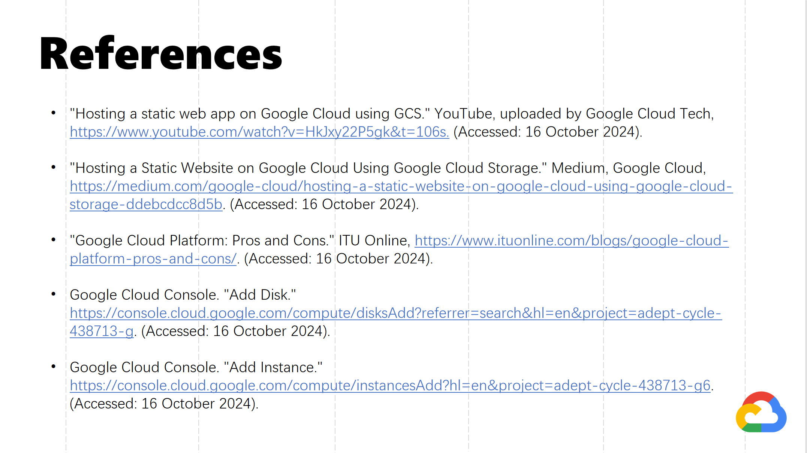

GOOGLE CLOUD PLATFORM
Google-Cloud-Platform PowerPoint
Contents
- Introduction
- What is GOOGLE CLOUD
- How to use GOOGLE CLOUD
- Usage scenarios of GOOGLE CLOUD
- Advantages and disadvantages of GOOGLE CLOUD
- Code example
- Key technologies of GOOGLE CLOUD
- GOOGLE CLOUD Tutorial Guide
- References
1.Introduction

This is a Google Cloud content introduction talk by Ye Shen, Yuanjie Zhang, Alyssa Maxwell, Ruji Zhang, and Yifei Wang from Mobile Web Development Group G.

The presentation contents as followed:
2.What is GOOGLE CLOUD

Google Cloud Platform, or GCP, is a series of cloud computing services provided by Google. In addition to providing management tools, Google Cloud Platform also provides a range of modular cloud services, including: cloud computing, data storage, data analytics and machine learning. In addition, users are required to provide credit card or bank account payment information when registering an account.
3.How to use GOOGLE CLOUD
Introduced the three main functions of the console page.(Menu,Search Bar,Avatar)
Some products provided by Google Cloud. Focus on how to create buckets, virtual machines and databases.
Scrolling down the console page, you'll see that the term "Product" refers to the various services and tools offered by Google Cloud, such as virtual machines, databases, and storage buckets.
Explains how to use buckets to store files in Google Cloud.
The simplest example is that we can use Google Cloud to store our files. After logging into our Google account and linking a credit card, we can create a bucket, and then we can upload files to it. Once the upload is successful, we can download the files back from Google Cloud.
Steps to create a virtual machine on Google Cloud. The configuration of the virtual machine can be customized according to personal needs.
Click "Create Instance" in "Compute Engine" to create a virtual machine. During the creation process, we can make the selection of functions such as instance naming, selection of region and operating system. For example, we can choose the most familiar Ubuntu operating system in the Boot disk. After we complete the setup, click the "Create" button to obtain a virtual machine. Then we can use SSH-in-browser to access the command line interface of the virtual machine.
Steps to create a database on Google Cloud. Similarly, the configuration of the database can be customized according to personal needs.
To create a database, we also need to click ＂Create Instance" in "SQL＂ first, then select the database engine and versions. Finally, click "Create Instance＂again to create a database.

The console page additionally provides "Developer Tools" and "Interactive Tutorials" to help users better use and understand Google Cloud.
"Interactive Tutorials" provides some guides to help users how to use Google Cloud.
"Developer Tools" offer some practical tools, such as Cloud Shell and Cloud SDK, which can help you interact with resources or edit code online.
Usage scenarios of GOOGLE CLOUD
A small business wants to launch a professional website for their services. They need a fast, reliable platform without having to manage all the technical infrastructure themselves. They use Google Cloud Platform (GCP) to easily develop, host, and manage the website.
GCP's machine learning services include AI Platform and AutoML, which enable users to build, train, and deploy machine learning models. Users can use the pre-trained models and tools provided by GCP to quickly realize functions such as natural language processing and image recognition. With GCP, users can easily integrate machine learning capabilities and improve the intelligence level of applications.
Reference from info cleanse https://www.infocleanse.com/business-data/technology-customers-list/cloud-computing-software-customers-list/google-cloud-platform-customers-list/
Advantages and disadvantages of GOOGLE CLOUD
GCP's billing model is based on pay-as-you-go, where users only pay for the resources they actually use. The console provides expense management tools where users can view usage and expenses in real time, set budgets and alerts to avoid overspending. Understanding the expense structure helps users optimize resource usage and reduce cloud computing costs.
Code example
Users can choose three suitable methods (Command Line, REST API, Terraform) to interact with and manage Google Cloud.These three methods provide different levels of flexibility and control.
To create a virtual machine, the four important components of the code are:
The graphical interface is more beginner-friendly, but the terminal has the advantage of efficiency, flexibility, and control, especially when frequent operations or complex configurations are required; thus, the command line is more efficient.
To ensure network security, a firewall needs to be established for the VM. The four important code settings for the firewall are:
Each VM instance requires at least one boot disk, which contains the operating system. The three important components of the code for creating a disk are:
Key technologies of GOOGLE CLOUD
Hosting a static web app on Google Cloud using GCS
Step 1 : Set up project
Step 2 : Creates a cloud storage bucket
Step 3 : Uplode files
Step 4 : Allow public access
Step 5 : Copy URL
Step 6 : Open browser
Step 7 : Webpage effect
Hosting Applications Using Google Cloud Run
Cloud Run is a fully managed compute service from Google Cloud that allows users to easily deploy and manage containerized applications. It supports a serverless architecture, where users only need to focus on code and containers, and don't need to manage infrastructure. Cloud Run autoscales, automatically adjusts resources based on traffic, supports services triggered by HTTP requests, and works with a variety of programming languages and frameworks. It also provides seamless integration with other Google Cloud services for scenarios such as building microservices, APIs, and background processing tasks. This page also gives a brief overview of its pros and cons.
For this aspect of the content, a simple application was made and hosted. It is simply divided into two parts, app making and hosting
First, I created a Flask app that handles GET and POST requests. Next, I wrote a Dockerfile for containerization and listed the dependencies in requirements.txt. Finally, I built and ran the Docker container. With that initial work completed, we moved on to the important hosting phase.
First, create a new project and a new folder, then copy the application files you previously completed into that folder. Use the illustrated commands to build your Docker image and deploy your image to Cloud Run. Once successful, a URL will appear, and you can click on it to access your application.
GOOGLE CLOUD Tutorial Guide
GCP provides rich tutorials and documentation to help users quickly get started. Users can visit GCP's official website to find interactive tutorials and developer guides to learn how to use various services. Here is a brief animated video I made introducing Google Cloud and how to create a simple instance. Due to the removal of watermarks in the video, some areas may appear blurry. I hope this will not affect understanding.
References

In preparing for this presentation, we consulted a variety of sources, including Wikipedia, the CSDN blog, the Zhihu column, and instructional videos on YouTube. These resources provide us with in-depth understanding and a wealth of information.
That's the end of our PowerPoint. If you're interested in learning about Google Cloud, make sure you don't miss out! Give it a try yourself and see what fun things you can accomplish on Google Cloud! If you have any questions, you can contact me.